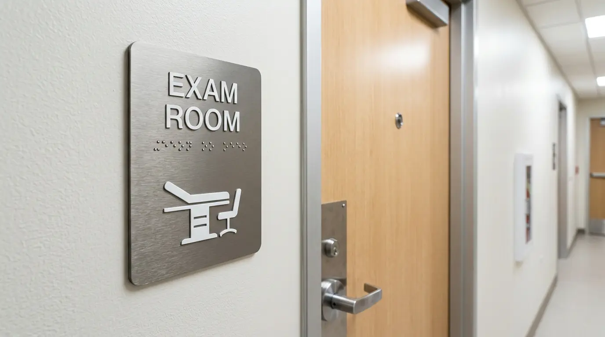
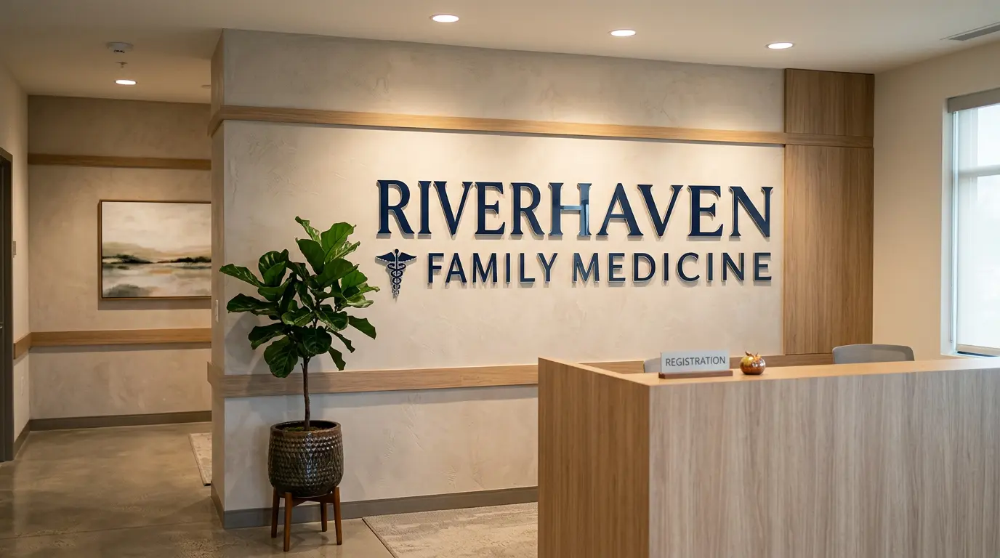
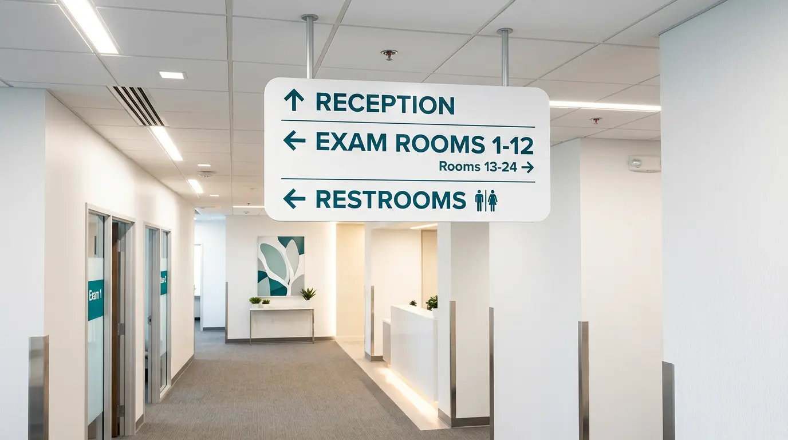
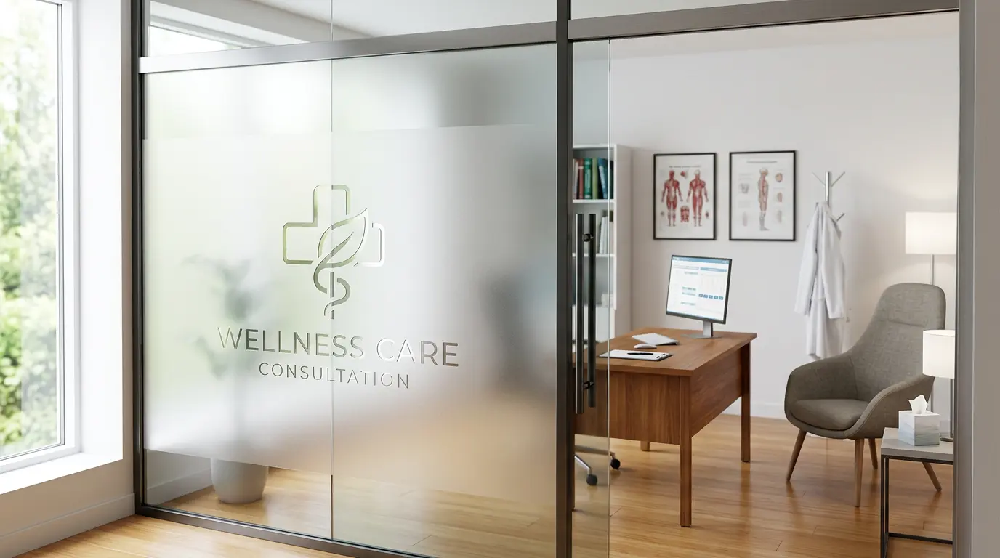
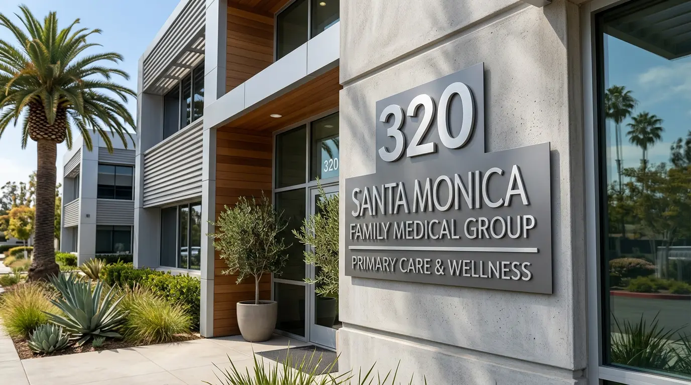
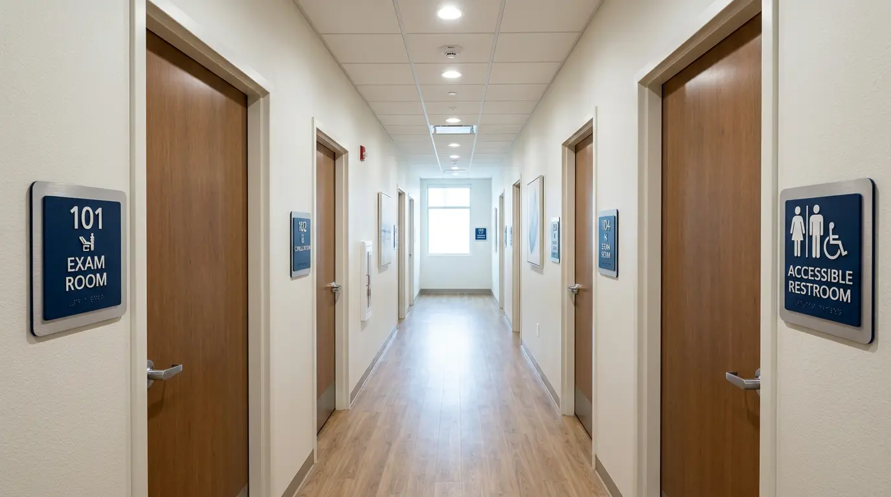

ADA-compliant room ID signs, lobby displays, wayfinding, window privacy film, and exterior suite markers — complete sign packages for medical and dental offices across Silicon Valley. Design, fabrication, and installation by one team.
Medical and dental offices have signage requirements that most other businesses don't. ADA-compliant room identification signs are federally mandated for any facility with interior rooms that patients access. Exam rooms, restrooms, waiting areas, stairwells, and utility spaces all require tactile signs with Grade 2 Braille, correct mounting height, and compliant contrast ratios. In California, the CBC Title 24 goes further than federal ADA minimums — stricter character sizing, additional pictogram requirements, and precise placement rules apply to every permanent room sign in your facility.
Beyond compliance, healthcare environments benefit from clear wayfinding. Patients who are nervous, unwell, or navigating a new facility need intuitive directional cues — suite markers at building entries, directional arrows in corridors, and clear room labeling throughout. A well-planned sign system reduces staff interruptions and improves the patient experience before anyone reaches the front desk.
On the exterior, medical tenants in San Jose typically work within strict landlord sign criteria. We review your lease's sign exhibit and permit requirements before quoting so you know exactly what's achievable — and what it costs — with no surprises mid-project.
Any room that is not open to the general public but is used by occupants must have a tactile sign at its door. In a medical office this includes every exam room, consultation room, restroom, storage area, and any room identified by a name or number. If you're fitting out a new San Jose medical suite, a complete ADA sign package is required before the City issues a Certificate of Occupancy.
ADA room ID signs, lobby displays, wayfinding systems, and exterior suite markers — installed for medical and dental practices throughout the South Bay.

ADA Room ID · Exam Room
Lobby Sign · Reception
Wayfinding · Corridor
Frosted Film · Consultation Room
Suite Marker · Exterior
Full ADA Package · Medical SuiteHealthcare practices typically need several sign types at once. We quote and install the full package so everything matches in material, finish, and brand.
Tactile signs with Grade 2 Braille and raised characters — required by California Title 24 for every permanent room patients or staff access. Fabricated to CBC §11B-703 specification and mounted at code height. Sourced through Gemini Sign Products with a lifetime material guarantee.
Required · Title 24 · All RoomsDimensional letters, flat-cut acrylic panels, or backlit logo displays for your reception wall. Available in acrylic, metal, PVC, or illuminated configurations — the first impression every patient gets when they walk through the door. Sourced through Gemini Sign Products for lifetime-guaranteed materials.
Acrylic · Metal · IlluminatedOverhead blade signs, wall-mounted directional arrows, and corridor signs that guide patients from entry to exam room without asking staff for help. Designed as a system with consistent typography, icons, and finish across every sign type in the facility.
System Design · Multi-RoomFrosted or decorative vinyl film for consultation rooms and private treatment areas — maintains natural light while blocking sightlines. Also used for exterior window branding: practice name, hours, and service listings on street-facing windows.
Frosted Film · Privacy · BrandingDimensional letter sets, suite number plaques, and directory panel listings for your building's exterior or monument sign directory. We handle landlord approval packages and City of San Jose permit submittals for all exterior installations.
Suite Markers · Directory · PermittedMen's, women's, all-gender, and accessible restroom signs with ISA pictograms, tactile text, and Braille — built to ADA and Title 24 spec. Accessible route markers and stairwell floor ID signs for multi-story medical buildings. Required for Certificate of Occupancy in San Jose.
Required · All BuildingsHealthcare clients can't afford sign projects that stall, miss compliance requirements, or come back wrong. Here's how we make sure that doesn't happen.
We specify ADA signs to California Building Code Title 24 — not just federal minimums. CBC is stricter in several areas including mounting heights, character proportions, and pictogram field sizes. Every sign we supply is fabricated to §11B-703 compliance. As a Gemini authorized reseller, braille accuracy and tactile depth carry a lifetime material warranty.
ADA room ID signs, lobby display, wayfinding, window film, exterior suite markers — all quoted and installed by one team. No coordinating multiple vendors, no chasing a subcontractor at install. Medical practices have enough to manage. Your sign package shouldn't add to that workload.
We schedule installation around your clinic hours. Early morning, evening, or weekend install slots are available so your team and patients aren't disrupted. ADA signs are mounted at 60" centerline, latch side of door, per CBC §11B-703. We provide an installation record for your building inspector and property manager.
The San Jose Chamber ADA grant program can cover up to $25,000 of qualifying signage work for eligible practices. We're familiar with the program and can provide the itemized quotes and documentation needed to support a grant application. Ask us about eligibility on your first call.
Two tools that help you get organized before the quote conversation — especially useful for new buildouts with multiple rooms.
Figuring out room naming conventions before ADA signs are ordered prevents costly re-orders. Our AI-assisted tool helps you settle on consistent room names — Exam Room 1 vs. Exam A, Consultation Room vs. Provider Office — before anything goes to fabrication.
Try the Sign Copy Tool →Share your floor plan, room count, preferred finish, and opening date — we'll produce a complete sign schedule and quote with quantities and pricing for every sign type required in your facility.
Start Your Design Brief →ADA compliance and professional interior signage apply across every healthcare specialty. Here's who we work with most.
Complete sign packages for general dentists, orthodontists, and oral surgeons — ADA room ID signs, lobby displays, window graphics, and exterior suite markers.
Primary care, internal medicine, and specialty clinics needing compliant wayfinding, professional lobby signs, and exterior building identification in multi-tenant medical buildings.
Exterior channel letters or dimensional signs, interior display graphics, and frosted window film for exam areas — coordinated to your brand and landlord sign criteria.
Motivational wall graphics for treatment areas, clear wayfinding for gym and therapy zones, and ADA-compliant room ID signs throughout the facility.
Privacy window film for consultation rooms, discreet suite signage, and calming interior wall graphics that support a therapeutic environment without a clinical feel.
High-visibility storefront signs and exterior cabinet signs for urgent care locations, plus interior wayfinding for fast patient routing in high-volume environments.
Upscale lobby signs, frosted window treatments, and dimensional letter sets that position your practice as premium before a client steps through the door.
Exterior building signs, interior wayfinding for exam rooms and waiting areas, and full ADA-compliant sign packages for certificate of occupancy compliance.
Medical offices often need several sign types as part of a single coordinated package. We handle all of them.
A structured process that ensures your complete sign package is correct before a single sign is ordered.
We review your floor plan, room schedule, and any existing signage to identify every sign required under California Title 24. On-site walkthroughs available throughout Silicon Valley — we document every room, door, and mounting location so nothing is missed before fabrication starts.
We produce a complete sign schedule — room by room, sign by sign — with quantities, room names, finish selection, and pricing. Design proofs are produced for every sign type so you can see exactly how everything will look before anything is ordered. This document also supports SJ Chamber ADA grant applications.
ADA signs are manufactured through Gemini Sign Products to your approved spec — correct character proportions, Grade 2 Braille, tactile depth, and finish. Lobby signs, window film, and wayfinding are produced in parallel. All signs quality-checked against the approved sign schedule before installation day.
ADA signs mounted at 60" centerline, latch side of door, per CBC §11B-703. Lobby and wayfinding signs installed to approved layout. Exterior signs coordinated with landlord approval and City of San Jose permit where required. We provide an installation record for your building inspector and property manager.
Based in San Jose, we supply and install medical office signs throughout the South Bay Area.